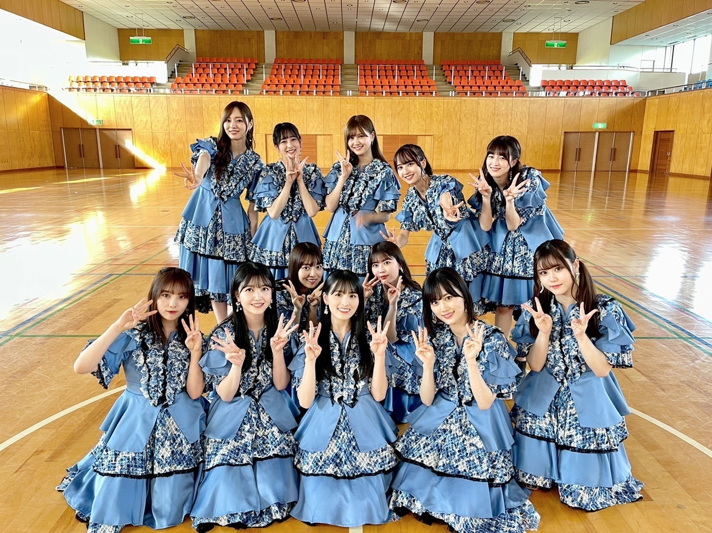
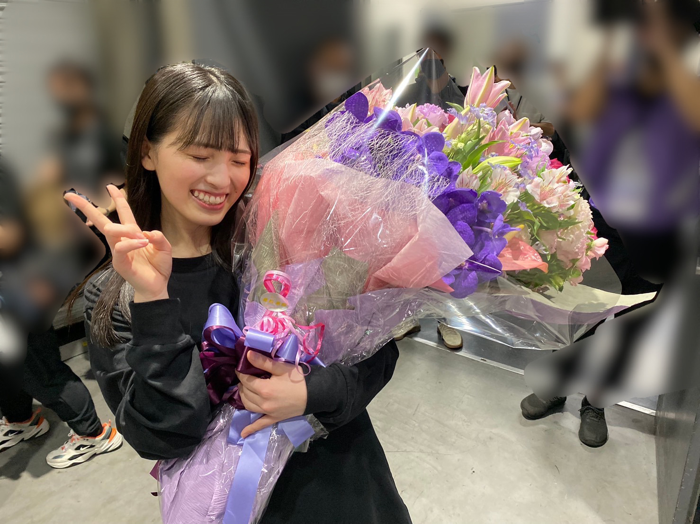

2021/0904Sat9月4日。
3期生5周年、おめでとう、！
大切な日に、
思い出ファーストのMVが
公開されました～

3期生の大好きな曲。
卒業前にMV撮影できたら幸せです、
と、お願いして。
わがままを叶えて頂きました。
撮影日が決まると、みんなで
楽しみだね、泣いちゃうねと話す
毎日がとても嬉しかったのです。
明日楽しもう！！と気合を入れて
眠ると、朝起きてなぜか胃が痛くて
撮影にご迷惑をかけてしまったりも
しましたが...
とても幸せな1日を過ごしました。
本当に楽しかったなぁ、
素敵な夏の思い出。
そして今日、私は乃木坂46としての
最後の日を過ごしました。
穏やかな気持ちで
卒業を迎えられたこと、
乃木坂を大好きになれたこと
よかったなと安心しています。
この5年間、
幸せが沢山ありました。
出会えてよかったなと
思える人が沢山います。

皆様、本当にありがとうございました。
大園桃子
2021/09/04 21:30
コメント(1315)
桃ちゃん
卒業おめでとう！！
色々大変な時期を乗り越えて、ファンの期待に応えてくれてありがとう。
そして最後まで可愛い、楽しい姿を見せてくれてありがとう。
これからもずっと、陰ながら元気でいることを願って、人生を応援しています！
桃子大好きです！
卒業おめでとう！！
色々大変な時期を乗り越えて、ファンの期待に応えてくれてありがとう。
そして最後まで可愛い、楽しい姿を見せてくれてありがとう。
これからもずっと、陰ながら元気でいることを願って、人生を応援しています！
桃子大好きです！
大園桃子さんへ
ご卒業本当におめでとうございます！
私は変わらないものを聞いて、大園桃子さんを好きになりました。
桃子ちゃんのすべてが大好きです。
大園桃子ちゃんの未来に
たっくさんの幸せと笑顔が溢れますように☺︎
5年間お疲れ様でした☺︎
大好きです☺︎
ご卒業本当におめでとうございます！
私は変わらないものを聞いて、大園桃子さんを好きになりました。
桃子ちゃんのすべてが大好きです。
大園桃子ちゃんの未来に
たっくさんの幸せと笑顔が溢れますように☺︎
5年間お疲れ様でした☺︎
大好きです☺︎
桃ちゃん5年間本当にありがとう。
桃ちゃんのことが大好きです。
3期生12人のことが大好きです。
これからも桃ちゃんの幸せを願っています！
たくさんたくさん幸せになってください！！！
これからも応援してます！大好きです！
桃ちゃんのことが大好きです。
3期生12人のことが大好きです。
これからも桃ちゃんの幸せを願っています！
たくさんたくさん幸せになってください！！！
これからも応援してます！大好きです！
桃ちゃんほんとに5年間お疲れ様でした！桃ちゃんに会えて幸せでした！卒業してもほんとに幸せなってね！大好き！
ももちゃん
卒業おめでとう！！！！
たくさんの幸せをありがとう。
たくさんの思い出をありがとう。
これからも一緒にがんばって
しあわせになろうね！
5年間お疲れ様でした。
ありがとう。
大園桃子さんのこと、忘れません。
卒業おめでとう！！！！
たくさんの幸せをありがとう。
たくさんの思い出をありがとう。
これからも一緒にがんばって
しあわせになろうね！
5年間お疲れ様でした。
ありがとう。
大園桃子さんのこと、忘れません。
ありがとう。応援させてくれてありがとう。これからも桃子のことをずっっっっと応援します。頑張ってください。幸せな人生を歩めることを心から祈っています。ありがとうございました。
5年間推しでいてくれてありがとう
大好きだよこれからもずっと応援してます。
幸せになってね！
大好きだよこれからもずっと応援してます。
幸せになってね！
桃ちゃん5年間本当に本当に本当にありがとう、そしてお疲れさまでした。回数は決して多くなかったけど毎回桃ちゃんとお話できることが楽しみで幸せでした。
これからもずっーーと応援してるね。ありがとう。大好き！！！
これからもずっーーと応援してるね。ありがとう。大好き！！！
大園桃子さん、5年間本当にお疲れ様でした。
そして、卒業おめでとうございます。
たくさん幸せになってください！
ゆか
そして、卒業おめでとうございます。
たくさん幸せになってください！
ゆか
桃子5年間お疲れ様でした！
思い出ファーストめっちゃ感動しました！
間違いなく一番好きなMVになりました！5年間乃木坂で大園桃子という存在をしれて僕はとても良かったです！
本当にお疲れ様！
これからも元気でいてね！
今までありがとうございました！！！
思い出ファーストめっちゃ感動しました！
間違いなく一番好きなMVになりました！5年間乃木坂で大園桃子という存在をしれて僕はとても良かったです！
本当にお疲れ様！
これからも元気でいてね！
今までありがとうございました！！！
5年間本当にお疲れ様でした。
桃子の人生がこれ以上ないほどに幸せになることを心から祈ってます。
これからもずっと応援してるよ！
桃子の人生がこれ以上ないほどに幸せになることを心から祈ってます。
これからもずっと応援してるよ！
5年間お疲れ様でした！
最高の12人でした！
ここまで幸せになれたのは
桃子がいた3期生の12人のおかげです！
本当にありがとうございました！
卒業しても頑張ってください！
ずっと応援してます！
最高の12人でした！
ここまで幸せになれたのは
桃子がいた3期生の12人のおかげです！
本当にありがとうございました！
卒業しても頑張ってください！
ずっと応援してます！
ももこお疲れ様でした、3期生として乃木坂に入ってくれてありがとう。
これからもももこの幸せ心から願ってます！
これからもももこの幸せ心から願ってます！
5年お疲れ様でした。桃ちゃんのらじらー大好きでしたよ。そして最後に本当に素敵な思い出ファーストのMVが出来てよかったね！卒業は寂しいけど、
これからの桃ちゃんの人生がハッピーで楽しくなる事を願ってるよ！絶対にしあわせになるんだよ！
今まで本当にありがとう。そしてお疲れ様でした！
これからの桃ちゃんの人生がハッピーで楽しくなる事を願ってるよ！絶対にしあわせになるんだよ！
今まで本当にありがとう。そしてお疲れ様でした！
桃子ありがとう！
5年間お疲れ様！
幸せになってね！
推せて幸せだったよ
いつか曽於市に行ってみるね～
5年間お疲れ様！
幸せになってね！
推せて幸せだったよ
いつか曽於市に行ってみるね～
本当に素敵な人でした。これからも桃子は人を幸せにしてあげれる人生だと思います。ありがとう。
桃ちゃん、今までありがとう！
らじらー！での藤森さんとのやり取りは何度聴いても面白かったです笑
ぜひゆっくり休んでください
らじらー！での藤森さんとのやり取りは何度聴いても面白かったです笑
ぜひゆっくり休んでください
桃子本当にありがとう。貴方の笑顔、声をいつまでも忘れません！！！
本当にお疲れ様でした！いつまでもお元気で！そしていつまでもお幸せに！！！！
本当にお疲れ様でした！いつまでもお元気で！そしていつまでもお幸せに！！！！
5年間ありがとう。
たくさん辛いことあっただろうけど頑張ってアイドル続けてくれて乃木坂でいてくれて本当にありがとう。
最近のももちゃんはすごく楽しそうで見ててこっちまでたくさん笑顔になれました！これからは自分の道を自分なりに進んで幸せになってください！ずっとずっと大好きです♡
たくさん辛いことあっただろうけど頑張ってアイドル続けてくれて乃木坂でいてくれて本当にありがとう。
最近のももちゃんはすごく楽しそうで見ててこっちまでたくさん笑顔になれました！これからは自分の道を自分なりに進んで幸せになってください！ずっとずっと大好きです♡
大園桃子さん、3期生として、3期生のセンターとして、乃木坂46という場であなたに出逢えたことをとても誇らしく、嬉しく思います。
5年間、お疲れ様です。
これからも幸せにお過ごしください。
大好きです。
MINImum(ミニ)
5年間、お疲れ様です。
これからも幸せにお過ごしください。
大好きです。
MINImum(ミニ)
配信見てました！
とっても楽しく感慨深い時間でした
思い出ファーストMV涙止まりません
桃ちゃんの綺麗な心をぼくも見習いたいと思います。
これからの桃ちゃんが幸せでありますように！(-人-)
桃子ブログ更新有難う！
思い出ファーストMV本当に最高過ぎる！最高！！！！！！！
桃子に出会えて本当に良かったよ。
本当にお疲れ様！
生まれてきてくれて有難う！
めちゃくちゃ幸せになってね！

ずっとずっと大好きだし、応援してるよ！
思い出ファーストMV本当に最高過ぎる！最高！！！！！！！
桃子に出会えて本当に良かったよ。
本当にお疲れ様！
生まれてきてくれて有難う！
めちゃくちゃ幸せになってね！
ずっとずっと大好きだし、応援してるよ！
ももちゃん５年間ありがとう！
お疲れ様でした！
とても輝いていた３期生のセンターをたくさんありがとうございました！
絶対幸せになってください！
お疲れ様でした！
とても輝いていた３期生のセンターをたくさんありがとうございました！
絶対幸せになってください！
今までありがとう。
握手会は一度しか行けなかったけど、ずっと応援してました。
これからも大好きです。幸せを願ってます！
本当にありがとうございました。
握手会は一度しか行けなかったけど、ずっと応援してました。
これからも大好きです。幸せを願ってます！
本当にありがとうございました。
ももちゃんほんとにお疲れさま！そしてありがとう！
どうか幸せになってください！大好きです！
どうか幸せになってください！大好きです！
5年間お疲れ様、ももこさんに出会えて本当に幸せな毎日でした
心から大園桃子さんの幸せを願っています
今までありがとうございました
心から大園桃子さんの幸せを願っています
今までありがとうございました
大園桃子さん、5年間本当にお疲れ様でした！と、5年間素敵なストーリーを見せてくれてありがとうございました！！
どこまでも素直で素敵な桃子が楽しそうに活動している姿は本当に応援していて楽しかったです！
これからも大好きです。3万回くらい言われたかもしれませんが幸せになってください。
出会ってくれてありがとう。
どこまでも素直で素敵な桃子が楽しそうに活動している姿は本当に応援していて楽しかったです！
これからも大好きです。3万回くらい言われたかもしれませんが幸せになってください。
出会ってくれてありがとう。
5年間お疲れ様でした！桃ちゃんの笑顔と歌声にたくさん元気もらえてました。今までありがとう！元気でね！桃ちゃんがいつも笑顔でいられますように
桃ちゃん卒業おめでとうございます！
ずっとずっと大好きです‼︎
ミーグリにも参加できてたくさん幸せをもらいました。
幸せになってください！
これからも三期生も桃ちゃんも大好きです。
思い出ファーストが好きだ！
ずっとずっと大好きです‼︎
ミーグリにも参加できてたくさん幸せをもらいました。
幸せになってください！
これからも三期生も桃ちゃんも大好きです。
思い出ファーストが好きだ！
ももちゃん卒業おめでとう！！
ももちゃんを推せて本当によかったです！！
乃木坂46に入ってくれてありがとう！
私も桃子ちゃんみたいに、人を笑顔にさせられる人になりたいです！
今までありがとうございました！
ずっと大好きです！！！
ももちゃんを推せて本当によかったです！！
乃木坂46に入ってくれてありがとう！
私も桃子ちゃんみたいに、人を笑顔にさせられる人になりたいです！
今までありがとうございました！
ずっと大好きです！！！
桃子！まずは卒業おめでとう！
そしておつかれさま！
大好きです。楽しませてくれてありがとうございました
これからの桃子の人生が幸せでありますように
お互い頑張りましょう！！
今までありがとう。またね。
そしておつかれさま！
大好きです。楽しませてくれてありがとうございました
これからの桃子の人生が幸せでありますように
お互い頑張りましょう！！
今までありがとう。またね。
桃子、卒業おめでとう！
そして、五年間ほんとうにお疲れさまでした！
最後の配信、三期生みんなの仲の良さにが伝わってきて感動したし、思い出ファーストのMVは泪がずっと流れてたなー
これから先も桃子の未来が幸せであるように！
本当にお疲れさまでした！
そして、五年間ほんとうにお疲れさまでした！
最後の配信、三期生みんなの仲の良さにが伝わってきて感動したし、思い出ファーストのMVは泪がずっと流れてたなー
これから先も桃子の未来が幸せであるように！
本当にお疲れさまでした！
桃子、卒業おめでとう！
そして、五年間ほんとうにお疲れさまでした！
最後の配信、三期生みんなの仲の良さにが伝わってきて感動したし、思い出ファーストのMVは泪がずっと流れてたなー
これから先も桃子の未来が幸せであるように！
本当にお疲れさまでした！
そして、五年間ほんとうにお疲れさまでした！
最後の配信、三期生みんなの仲の良さにが伝わってきて感動したし、思い出ファーストのMVは泪がずっと流れてたなー
これから先も桃子の未来が幸せであるように！
本当にお疲れさまでした！
桃ちゃん5年間お疲れ様！！
そして本当に沢山の笑顔と感動をありがとう！！！
生放送号泣しました。ライブでも号泣して、最近桃ちゃんのことで涙腺崩壊してます笑
思い出ファーストのMV最高！！！
これまた号泣案件ですが、最高です！！
桃ちゃんの涙につられてしまうのです。
乃木坂を好きになってよかった！！
3期生を好きになってよかった！！
桃ちゃんを大好きになって本当によかった！！！！
5年間乃木坂46で活動してくれてありがとう。
これから私たちに幸せをくれた以上に！
たくさん幸せになってくださいっ！！
そして本当に沢山の笑顔と感動をありがとう！！！
生放送号泣しました。ライブでも号泣して、最近桃ちゃんのことで涙腺崩壊してます笑
思い出ファーストのMV最高！！！
これまた号泣案件ですが、最高です！！
桃ちゃんの涙につられてしまうのです。
乃木坂を好きになってよかった！！
3期生を好きになってよかった！！
桃ちゃんを大好きになって本当によかった！！！！
5年間乃木坂46で活動してくれてありがとう。
これから私たちに幸せをくれた以上に！
たくさん幸せになってくださいっ！！
ももこちゃん本当にお疲れ様でした！
たくさんたくさん笑顔をありがとう！
元気をありがとう！
ももこと出会えて本当に幸せなことだらけでした！
ももこの変わらないもの本当に大好きでした！
とても美しい声で聴いていて凄く心が癒されて本当に大好きでした！
乃木坂配信中見ましたよー！
ももこの乃木坂愛に溢れた放送でしたね～
写真一つ一つへの思いが本当に強くて本当に楽しいことだらけだったんだな～って思いました！
特に飛鳥さんとの写真多かったですね！
本当に飛鳥さん好きなんだね～
ももこの写真見たらももこもみんなのこと好きだけどみんなもももこのこと凄く好きなんだなぁ～って改めて思いました！
思い出ファーストのMVなんか泣きすぎてヤバかったな～
3期生は最高の期ですね！
3期生の絆は半端ないですね！
これからも思い出ファーストは自分にとって一生大好きな曲です！
今日という日が僕の思い出になりました！
3期生のみんなが登場してからももこどんどん笑顔になっていましたね！
笑顔で溢れている3期生大好きです！
これからもずっと3期生全員と仲良くいてください！
ももこは卒業してもずっと3期生だよ～
本当に感動をありがとう！
ももこの思いとかも凄くたくさん聞けてたくさん泣いちゃいました。
本当にももこらしい放送でしたね～
本当に幸せな時間でした～
最後までたくさん幸せをありがとう！
ももこに出会えたことが僕にとって最高の思い出です！
最後に最高のプレゼントをありがとう！
次はももこが幸せになる番ですね！
これからもずっと幸せで笑顔でいてください！
これからもももこの将来をずっと応援しています！
3期生最高～～～！
ももこ最高～～～！
ももこずっと大好きだよ～
りょーたです。
たくさんたくさん笑顔をありがとう！
元気をありがとう！
ももこと出会えて本当に幸せなことだらけでした！
ももこの変わらないもの本当に大好きでした！
とても美しい声で聴いていて凄く心が癒されて本当に大好きでした！
乃木坂配信中見ましたよー！
ももこの乃木坂愛に溢れた放送でしたね～
写真一つ一つへの思いが本当に強くて本当に楽しいことだらけだったんだな～って思いました！
特に飛鳥さんとの写真多かったですね！
本当に飛鳥さん好きなんだね～
ももこの写真見たらももこもみんなのこと好きだけどみんなもももこのこと凄く好きなんだなぁ～って改めて思いました！
思い出ファーストのMVなんか泣きすぎてヤバかったな～
3期生は最高の期ですね！
3期生の絆は半端ないですね！
これからも思い出ファーストは自分にとって一生大好きな曲です！
今日という日が僕の思い出になりました！
3期生のみんなが登場してからももこどんどん笑顔になっていましたね！
笑顔で溢れている3期生大好きです！
これからもずっと3期生全員と仲良くいてください！
ももこは卒業してもずっと3期生だよ～
本当に感動をありがとう！
ももこの思いとかも凄くたくさん聞けてたくさん泣いちゃいました。
本当にももこらしい放送でしたね～
本当に幸せな時間でした～
最後までたくさん幸せをありがとう！
ももこに出会えたことが僕にとって最高の思い出です！
最後に最高のプレゼントをありがとう！
次はももこが幸せになる番ですね！
これからもずっと幸せで笑顔でいてください！
これからもももこの将来をずっと応援しています！
3期生最高～～～！
ももこ最高～～～！
ももこずっと大好きだよ～
りょーたです。
桃子最後のブログありがとう。
幸せな5年間をありがとう。桃子は唯一無二の最強のアイドルでした。
これからも桃子の幸せをずっと願ってます！ずっと味方だよ！だいすき！
幸せな5年間をありがとう。桃子は唯一無二の最強のアイドルでした。
これからも桃子の幸せをずっと願ってます！ずっと味方だよ！だいすき！
ももちゃん、5年間お疲れ様でした！
ステージでのももちゃんの輝く笑顔にいつも元気をもらってました☺︎
幸せな気持ちにさせてくれてありがとう。
これからも応援してます♡
幸せになってね。
ステージでのももちゃんの輝く笑顔にいつも元気をもらってました☺︎
幸せな気持ちにさせてくれてありがとう。
これからも応援してます♡
幸せになってね。
5年間お疲れ様でした！
桃子のことを推すことができてすごく幸せでした。
桃子が乃木坂46に入らなければ出会うことができなかったのでオーディションを受けてくれてありがとう。
桃子には感謝してもしきれないくらい沢山の思い出をもらったのでこれからも桃子の幸せを願ってます。
今まで本当にありがとうございました。
またね。
桃子のことを推すことができてすごく幸せでした。
桃子が乃木坂46に入らなければ出会うことができなかったのでオーディションを受けてくれてありがとう。
桃子には感謝してもしきれないくらい沢山の思い出をもらったのでこれからも桃子の幸せを願ってます。
今まで本当にありがとうございました。
またね。
5年間ほんっっとうにお疲れ様でした
最後の最後に本当に素敵な卒業制作をありがとう！
3期生は最強の12人だったし桃ちゃんは最強のセンターでした
これからも健やかな人生を送ってください
一生応援しています！
最後の最後に本当に素敵な卒業制作をありがとう！
3期生は最強の12人だったし桃ちゃんは最強のセンターでした
これからも健やかな人生を送ってください
一生応援しています！
桃子今まで本当にありがとう
桃子に出会えて本当によかった。
よく頑張りました、はなまるです。
幸せに暮らしてください、これからもずっと桃子推しだよ。
大好き！！
桃子に出会えて本当によかった。
よく頑張りました、はなまるです。
幸せに暮らしてください、これからもずっと桃子推しだよ。
大好き！！
ももちゃんお疲れ様でした。
あなたを推せて毎日楽しかったです。
もう見れなくなるのは本当に寂しいけど、
幸せになってくれたら本当に嬉しいです。
応援させてくれてありがとうございました。
あなたを推せて毎日楽しかったです。
もう見れなくなるのは本当に寂しいけど、
幸せになってくれたら本当に嬉しいです。
応援させてくれてありがとうございました。
桃子卒業おめでとう
いつもキラキラ輝いていた桃子が大好きでした。
もうテレビやラジオで会えなくなるのは凄く寂しいけど、
桃子が第2の人生がスタートを切ったと思って、自分も頑張ります！
3期生は永遠に！
改めて卒業おめでとう！またどこかで！さようなら！
いつもキラキラ輝いていた桃子が大好きでした。
もうテレビやラジオで会えなくなるのは凄く寂しいけど、
桃子が第2の人生がスタートを切ったと思って、自分も頑張ります！
3期生は永遠に！
改めて卒業おめでとう！またどこかで！さようなら！
桃子5年間お疲れ様でした！
桃子と与田ちゃんがセンターしてる逃げ水を初めてみてから
乃木坂を知って、乃木坂を大好きになりました。
桃子の笑顔に沢山元気をもらって、桃子のカバーしていた曲を聴いて、沢山感動をもらって、桃子には沢山の物をもらいました。
直接桃子にありがとうって伝えられなかったのが後悔してます…
でも今日、桃子が楽しそうに思い出語っていたり、思い出ファーストのMV、3期生がみんな集まったりしててほんとに桃子の周りは暖かい人でいっぱいだなぁって改めて思いました。
桃子、ほんとに乃木坂に入ってくれて、アイドルとして居てくれてありがとう！ずっとずっと！大好きです。卒業してもたくさん！幸せになってね♡
桃子と与田ちゃんがセンターしてる逃げ水を初めてみてから
乃木坂を知って、乃木坂を大好きになりました。
桃子の笑顔に沢山元気をもらって、桃子のカバーしていた曲を聴いて、沢山感動をもらって、桃子には沢山の物をもらいました。
直接桃子にありがとうって伝えられなかったのが後悔してます…
でも今日、桃子が楽しそうに思い出語っていたり、思い出ファーストのMV、3期生がみんな集まったりしててほんとに桃子の周りは暖かい人でいっぱいだなぁって改めて思いました。
桃子、ほんとに乃木坂に入ってくれて、アイドルとして居てくれてありがとう！ずっとずっと！大好きです。卒業してもたくさん！幸せになってね♡
ももちゃん卒業おめでとう！
あなたの笑顔が大好きでした
これからたくさん幸せになってね！
5年間本当にお疲れ様でした！ありがとう！
あなたの笑顔が大好きでした
これからたくさん幸せになってね！
5年間本当にお疲れ様でした！ありがとう！
桃子ちゃん。5年間本当にお疲れ様でした。
ずっとキラキラしていて、綺麗で本当に素敵でした。
乃木坂46として活動してくれたこと、ここまで乃木坂46でいてくれたこと、感謝しかありません。ありがとうございます。
これからも桃子ちゃんの人生を応援しています。
どこかのあなたにこの気持ちが届きますように。
ありがとうございました。これからもたくさん幸せになってください。
ずっとキラキラしていて、綺麗で本当に素敵でした。
乃木坂46として活動してくれたこと、ここまで乃木坂46でいてくれたこと、感謝しかありません。ありがとうございます。
これからも桃子ちゃんの人生を応援しています。
どこかのあなたにこの気持ちが届きますように。
ありがとうございました。これからもたくさん幸せになってください。
桃子5年間お疲れ様でした！そしてありがとうね！！桃子には沢山『元気』や『勇気』をもらいました！だけど、自分は桃子にはなんにも返せてません。とっても悔しいです。感謝の一言も直接伝えられませんでした。ミーグリにも参加出来ずほんとに不甲斐ないです。でもブログのコメントで何回かコメントさせてもらったので読んでもらってたら嬉しいです笑最後に、桃子！ほんとにずっと輝いてたよ！大好きだよ！！可愛いよ！一生幸せになって下さい！！ほんとうに大好きです！！！！！！これからの人生にも幸あれ。。。お疲れ様でした！！
けんたっきー。より
けんたっきー。より
5年間お疲れ様でした！
あなたの笑顔で元気いっぱいもらいました！
桃子さんが幸せになれるようこれからも遠くから応援してます！
本当にお疲れ様でした！ありがとう
あなたの笑顔で元気いっぱいもらいました！
桃子さんが幸せになれるようこれからも遠くから応援してます！
本当にお疲れ様でした！ありがとう
桃ちゃん5年間ほんとに
お疲れ様でした
素晴らしい仲間と素晴らしい先輩と
素敵なスタッフさんたちと。
最後に桃ちゃんが幸せだとおもって
卒業しいってくれること
ほんとに幸せです
これからも素敵な人生でありますように。
幸せでありますように
元気でね！
ほんとにありがとう♡
チサ
お疲れ様でした
素晴らしい仲間と素晴らしい先輩と
素敵なスタッフさんたちと。
最後に桃ちゃんが幸せだとおもって
卒業しいってくれること
ほんとに幸せです
これからも素敵な人生でありますように。
幸せでありますように
元気でね！
ほんとにありがとう♡
チサ
5年間本当にお疲れ様でした。
桃ちゃんを応援してきた5年間とても楽しかった！
初めて好きになったアイドルが桃ちゃんで本当によかった。
3期生12人に出会えて僕は十分幸せです。
桃子さんの更なる幸せを願ってます。
卒業おめでとうございます。
桃ちゃんを応援してきた5年間とても楽しかった！
初めて好きになったアイドルが桃ちゃんで本当によかった。
3期生12人に出会えて僕は十分幸せです。
桃子さんの更なる幸せを願ってます。
卒業おめでとうございます。


5年間お疲れ様でした！
どんな道に進んでも応援してます！
ずっと大好きです